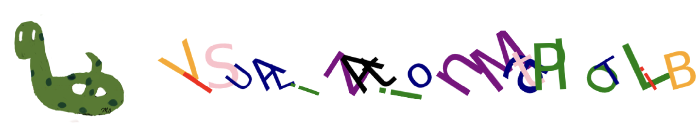

Visualization Matplotlib#

In this section, we’ll use matplotlib.pyplot, which has been imported and used (aliased) as plt.
import matplotlib.pyplot as plt
Scatterplot#
For a single point, provide (x_coordinate, y-coordinate).
For multiple points, provide (x_coordinate sequence, y-coordinate sequence), where the sequence can be a tuple, list, or series.
# single point
plt.scatter(5,10); # x=5, y=10
If multiple points are given with their coordinates as follows:
x_coordinate sequence: [2, 4, 5]
y_coordinate sequence: [10, 3, 6]
In this setup:
2 corresponds to the x-coordinate of the first point, and 10 corresponds to its y-coordinate.
4 corresponds to the x-coordinate of the second point, and 3 corresponds to its y-coordinate.
5 corresponds to the x-coordinate of the third point, and 6 corresponds to its y-coordinate.
In the following code, the points are: \((2,10), (4,3), (5,6)\).
# multiple points
plt.scatter([2,4,5],[10,3,6]);
Figure Size#
The size of a chart figure can be adjusted using the figsize=(width, height) parameter of plt.figure().
plt.figure(figsize=(10,3)) # width:10, height:3
plt.scatter([2,4,5],[10,3,6]);
Color#
The c or color parameter is used to modify the color of points (markers).
plt.scatter([2,4,5],[10,3,6], c='red'); # instead of 'red' it is enough to write 'r'
plt.scatter([2,4,5],[10,3,6], color='r'); # color parameter
Size#
The s is used to modify the size of points (markers).
plt.scatter([2,4,5],[10,3,6], s=300); # size=300
Markers and Scatters#
The marker parameter is used to modify the style of points (markers).
For more marker styles check:
# plus symbol
plt.scatter([2,4,5],[10,3,6], marker='+');
# square
plt.scatter([2,4,5],[10,3,6], marker='s');
Transparency#
The alpha parameter is used to modify the transparency of points (markers).
alpha is a number between 0 (transparent) and 1 (opaque).
plt.scatter([2,4,5],[10,3,6], alpha=0.3);
Linewidth and Scatters#
The linewidth and edgecolor parameters are used to modify the boundary of points (markers).
plt.scatter([2,4,5],[10,3,6], c='r', s=200, linewidths=5, edgecolor='b');
Title#
The plt.title() is used to add a title to the figure.
plt.title('Three Square Points')
plt.scatter([2,4,5],[10,3,6], c='r', s=200, marker='s');
# pad adds a padding below the title
# fontsize and location (loc) can be modified.
plt.title('Three Points', fontsize=20, loc='right', pad=100, c='b')
plt.scatter([2,4,5],[10,3,6], c='r', s=200, marker='s');
Suptitle#
The plt.suptitle() is used to add a suptitle to the figure.
plt.title('Three Points', fontsize=20, loc='right', pad=100, c='b')
plt.suptitle('Different Colors', fontsize=15, c='g', y=1)
plt.scatter([2,4,5],[10,3,6], c='r', s=200, marker='s');
Grid#
The plt.grid() is used to add horizontal and vertical grids to the figure.
plt.scatter([2,4,5],[10,3,6])
plt.grid();
# only vertical
plt.scatter([2,4,5],[10,3,6])
plt.grid(axis='x');
# only horizontal
plt.scatter([2,4,5],[10,3,6])
plt.grid(axis='y');
Legend#
The plt.legend() is used to add a legend to the figure.
plt.scatter([2,4,5],[10,3,6], c='r', label='reds')
plt.scatter([5,1,9],[4,8,7], c='g', label='greens')
plt.legend();

# location of legend: lower left
plt.scatter([2,4,5],[10,3,6], c='r', label='reds')
plt.scatter([5,1,9],[4,8,7], c='g', label='greens')
plt.legend(loc='lower left');
Axis Labels#
The plt.xlabel() and plt.ylabel() are used to add x-axis and y-axis labels to the figure.
plt.scatter([2,4,5],[10,3,6])
plt.xlabel('x_coordiante')
plt.ylabel('y_coordiante');
Axis Ticks#
The plt.xticks() and plt.yticks() are used to modify the ticks of both the x and y axes, respectively.
plt.scatter([2,4,5],[10,3,6])
plt.xticks([2,4,5], ['Washington', 'Alabama','Virginia']);

# rotation
plt.scatter([2,4,5],[10,3,6])
plt.xticks([2,4,5], ['Washington', 'Alabama','Virginia'], rotation=90);
Text#
The plt.text()is used to add a text starting from the specified coordinate on the figure.
plt.scatter([2,4,5],[10,3,6])
plt.text(4.05,3,'Alabama'); # starts from the point (4.05,3)
Facecolor#
The facecolor of a chart figure can be adjusted using the facecolor parameter of plt.figure().
plt.figure(facecolor='g')
plt.scatter([2,4,5],[10,3,6]);
# background of the figure
plt.axes().set_facecolor('yellow')
plt.scatter([2,4,5],[10,3,6]);
Subplot#
plt.subplot() is used to create multiple plots within a single figure. Here’s a breakdown of its parameters:
The first parameter specifies the number of rows of subplots.
The second parameter specifies the number of columns of subplots.
The third parameter specifies the order of the subplot, starting from 1 and increasing row-wise and then column-wise.
# number of rows: 1
# number of columns: 3
plt.figure(figsize=(20,5))
plt.subplot(1,3,1)
plt.scatter([2,4],[8,7],c='r')
plt.subplot(1,3,2)
plt.scatter([1,2],[5,12],c='b')
plt.subplot(1,3,3)
plt.scatter([6,10],[1,2],c='g');
Lineplot#
plt.plot() creates a line plot by connecting the given points using line segments.
plt.plot([1,3],[7,10]); # start from (1,3) up to (3,10)
Linewidth and Lines#
The linewidth is used to modify the width of the line.
plt.plot([1,3],[7,10], linewidth=7);
Color and Lines#
The c or color parameter is used to modify the color of the line.
plt.plot([1,3],[7,10], c='r');
Linestyle and Lines#
The linestyle parameter is used to modify the style of the line.
plt.plot([1,7],[3,10], c='r', linestyle='dashed')
plt.plot([0,8],[12,3], c='g', linestyle='dotted');
Markers and Lines#
The marker parameter is used to specify the style of the markers, while the markersize parameter is used to adjust their size.
plt.plot([1,3],[7,10], c='r', marker='*', markersize=10);
# multiple points
plt.plot([1,3,5,7,9,11,13,13],[7,10,1,8,3,6,2,1], c='r', marker='*', markersize=20);

Pie Chart#
plt.pie() is used to generate a pie chart. Here’s how the mentioned parameters work:
The
radiusparameter adjusts the size of the pie chart.The
autopctparameter is used to include and customize the display of percentage values.‘%.0f’: 0 reprecents the decimal place, ‘f’ represents float
expenses = ['housing', 'tuition', 'transportation', 'supplies', 'food']
cost = [700, 1000, 200, 100, 500 ]
color_set = ['y', 'r', 'g', 'orange', 'navy']
plt.pie(cost, colors = color_set, labels=expenses, radius=1, autopct='%.0f');

Barplot#
plt.bar() is used to generate a bar plot.
plt.bar(expenses, cost);
# horizontal
plt.barh(expenses, cost, color='r' );
Boxplot#
plt.boxplot() is used to generate a box plot, which represents the five-number summary:
Minimum
1st quartile (median of the first half)
2nd quartile (median)
3rd quartile (median of the second half)
Maximum
Open circles are used to represent outliers.
plt.boxplot([8,7,3,2,1,5,6,7,8,15]);
Histogram#
plt.hist() is used to generate histograms, which represent the distribution of the data.
plt.hist([1,1,8,7,3,2,1,5,6,7,8,15,15,15,15]);
Save a Figure#
You can save a figure to a local computer or Google drive.
Local Computer#
# save to a local computer
# same folder with your code
# name of the saveg picture is 'states_plot.png'
plt.scatter([2,4,5],[10,3,6])
plt.savefig('states_plot.png')
# save to a local computer
# to folder called data_files
plt.scatter([2,4,5],[10,3,6])
plt.savefig('data_files/states_plot.png')
Google Colab#
# mount
# connection between colab notebook and drive
from google.colab import drive
drive.mount('/content/drive')
# save it to a folder in My Drive called data_files
# the name of the saved picture is states_plot.png
plt.scatter([2,4,5],[10,3,6])
plt.savefig('/content/drive/My Drive/data_files/states_plot.png')